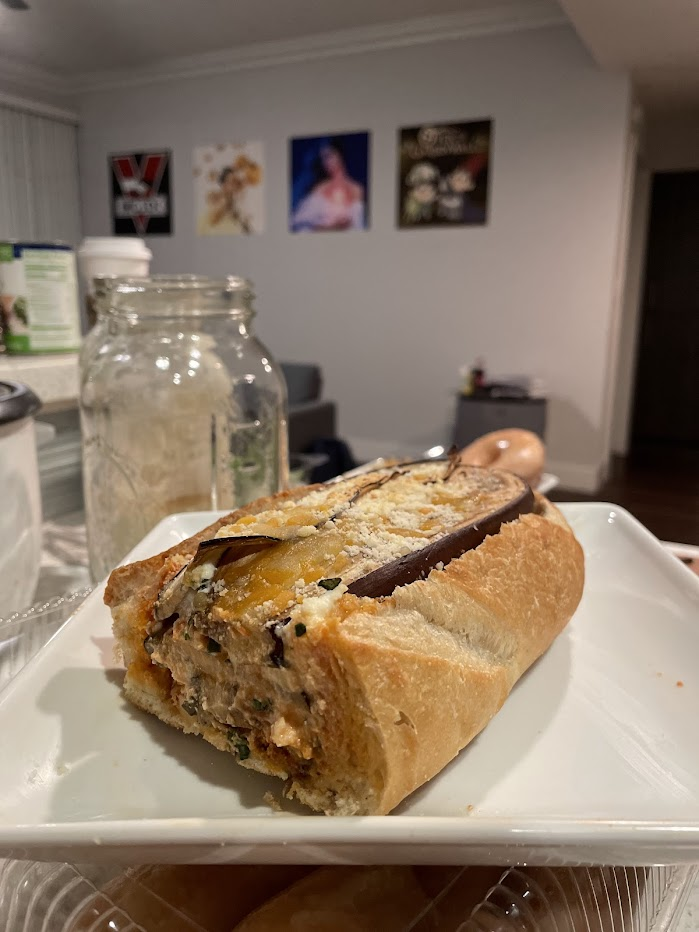

Lasagna loaf

Lasagna loaf
Ingredients
- A large loaf of bread
- Cremini mushrooms
- Ricotta cheese
- Eggplant
Instructions
Cut eggplant into thin slices and roast those in the oven for a while, until they have shrunk and are soft. Make eggplant lasagna inside a hollowed-out loaf of bread, and bake it all together.
Serving suggestion
Notes
You can make all sorts of stews and stuff baked inside a bread bowl as well. Try cooking some canneli beans and tomatoes with other veggies, then putting that in a bread bowl. Also, try putting macaroni and cheese (made with softened onions and gruyere cheese) in a bread bowl and baking it.